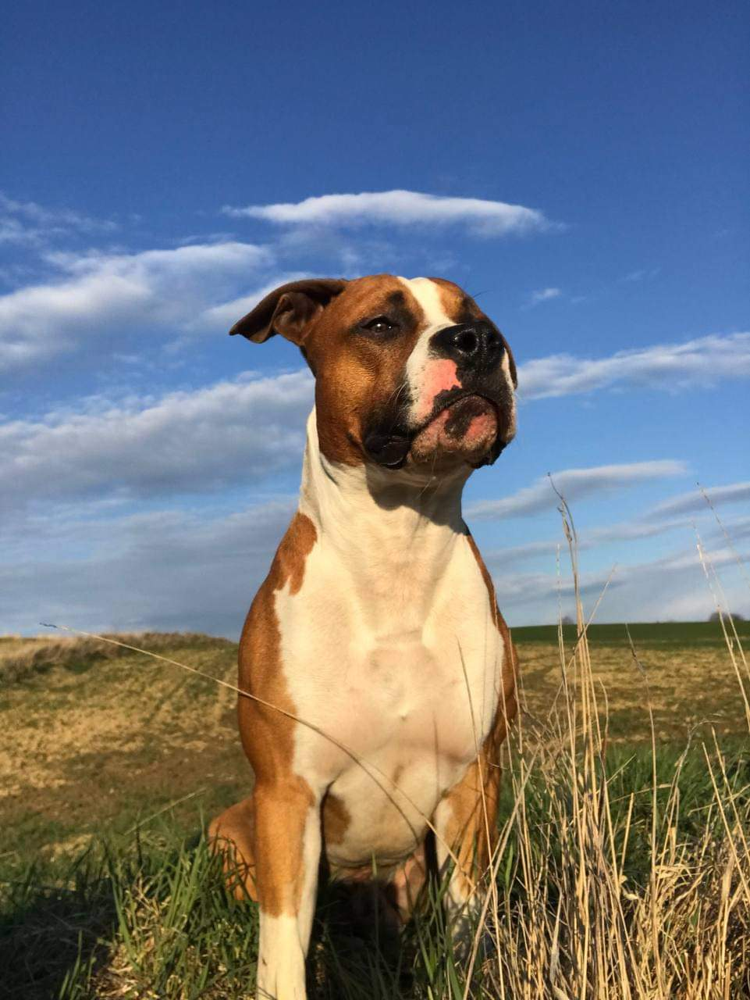

Das ist das Süßeste, was Sie heute sehen werden!
Lehn dich zurück und Genieß du den Anblick dieser schönen Geschöpfe!

Labrador retriever
- Lebenserwartung - 10–12 Jahre
- Charakter - sanft, freundlich, ausgeglichen, vertrauensvoll, intelligent, gehorsam
- Höhe - männlich: 57–62 cm, weiblich : 55–60 cm
- Gewicht - männlich: 29–36 kg, weiblich : 25–32 kg
- Haare – Biskuitfarben (zulässig von hell-cremefarben bis rot), schokolade, schwarz; kurzes Fell
Amerykański Staffordshire terrier
- Lebenserwartung - 12-16 Jahre
- Höhe: männlich – 46–48 cm; weiblich – 43–46 cm
- Charakter - dynamisch, mutig, energisch Tier; großer Bewegungsbedarf; erfordert engen Kontakt mit dem Eigentümer
- Amstaffas sind keine besonders freundlichen Familienhunde. Ihr muskulöser Körperbau und ihre große Schnauze deuten eher auf eine gefährliche und schwierige Rasse hin. Tatsächlich brauchen sie einen erfahrenen Betreuer, aber sie sind von Natur aus sehr offen und freundlich.


Jack Russell terrier
- Lebenserwartung - 13-13 Jahre
- Höhe und Gewicht - Höhe – 25-30 cm, Gewicht – 5-6 kg
- Färbung – dominantes Weiß mit weiß, schwarz geflammt und rot
- Charakter – mutig, streitsüchtig und aktiv
Maltipoo
- Lebenserwartung - 10-15 Jahre
- Höhe und Gewicht: 20–30 cm, waga: 3–5 kg
- Farbe – Weiß, Rot, Schwarz
- Charakter – offen, intelligent, fröhlich, aktiv, ausgelassen


Cocker spaniel angielski
- Lebenserwartung - 12-15 Jahre
- Höhe und Gewicht: männlich–39–41 cm, weiblich -38–39 cm, Gewicht: 13–14,5 kg
- Färbung – Salbe kann einheitlich, zweifarbig oder dreifarbig sein
- Charakter – fröhlich und energisch, guter Begleiter; neugierig und mutig, mit einem Hang zum Spielen
Golden retriever
- Lebenserwartung - 10-15 Jahre
- Höhe ung Gewicht: weiblich –56-58 cm, männlich 61-66 cm, Gewicht:14-21 kg
- Färbung – unifarben, von weiß über creme oder gold bis hin zu Schokolade und Schwarz
- Charakter – anfällig für Ausbildung und zeigen Intelligenz